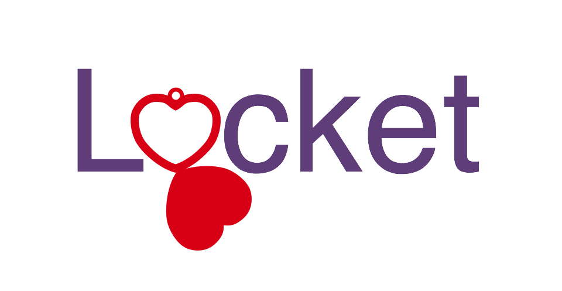

Locket Design Diary
This is the design diary for the GitHub Pages for Locket, a pure-JavaScript implementation of an evented I/O backed LevelDB for LevelUP.
Choosing to create a logo-type, my first, with a locket for an O, that can act alone as logo. The alone logo might take a different form factor, or it might even look less like a locket, in order to fit into a square for icons.
Not sure what to look for in a font. I'm using Google fonts, putting serif fonts into a Google fonts collection. Then looking at how they fit with the word Locket. (There are some script fonts in there too, so I can learn not to fear them.)
I assume I'll want an interesting L and k, and a round o and c. I'm going to use a serif font because serifs mean fancy and all jewelry is fancy, lockets are jewelry. The font should have serifs because serifs are an adornment, and jewelry is about adornment.
Although, I'm considering a script font for the tag line, like a note given with a gift, or a note kept with a locket that is not worn.
Colors, at this point; red and purple come to mind, but they always seem to come to mind, and white and silver, because that's how I see most lockets displayed, white and silver, although I'm probably not up for learning how to do silver just yet.
This is the logo and logo-type. No thoughts yet on how to present the software itself, except that it doesn't need much in the way of documentation. It is an implementation of documented API. It needs a sales letter that tells you why Locket is an advanced implementation the API.
Logo-type Progression
As noted above I wanted a serif font because I wanted the letters in the logo to themselves be adorned, the way we adorn ourselves with lockets.
Here is the recipe I followed as fast as I could, so I would swoop through the design and not fuss.
- Draw half a heart.
- Duplicate the half and create a whole heart.
- Fill the heart.
- Duplicate the heart to create a locket cover.
- Position the cover.
- Punch a hole in the heart to create a locket frame.
- Put a loop on top of the frame.
- Choose a thick serif font.
- Replace the o in locket with the locket.
I got this after trying a few different fonts. This is the final that I'll live with for a few weeks.

I got the locket rather directly. I'd already spend a long time fussing over the half heart, so that much was done. So long as it made a descent full heart, I was going to go with it.
I made sure it had a rounded point so it could hinge in a V. I didn't want the locket cover to drop straight down. I did not want the locket cover to be the O and the locket frame the C, that would be too clever, and in fact, as I write this it is as fully formed as that thought has been. I've repressed it.
Here is a Google Fonts collection of the fonts mentioned in this article that you can use to follow along. Helvetica is not listed there, but it is probably installed on your computer.
When I first put the locket to type, I used the default font for Sketch, which was Helvetica. I liked the result.

I needed a font that was not too thick to company the locket frame. The locket frame is a uniform width all around, so I would want a font with a uniform width, as opposed to one of those fonts with an O that is thin on top and wide in the middle.
I tried Arbutus Slab, because it looked like it had an exuberant K.
I'd imagined that I'd want a font that had a ball at the top of it's C. But a font as dynamic as Arbrutus Slab made the locket look flat, bland, and incomplete.
I tried Domine. It is milder.
It is closer. The locket does not look as static in comparison to the font.
I settled on Anadada. It didn't have that ball at the top of the C. That ball means fancy jewelry. Andada appears to be not as fancy, therefore not as pretentious. It is closer to adolescence than it to retirement.
Then I added the Locket tag line in Sacremento, which brings us to the final we already saw above.
Software Used
I had a go at using Illustrator for this project, but once I got a good half heart in Illustrator, I went back to Sketch and found that it had pretty good pen tool. I didn't like the Sketch pen tool at first, because everything it made was ugly, but it turns out that was just me. After spending some time in Illustrator, the Sketch pen tool got a lot better, and now seems to be easier to use than the Illustrator pen tool. Again, probably just me, but if I can get the results I want out of a Sketch, I'm going to stick with it.